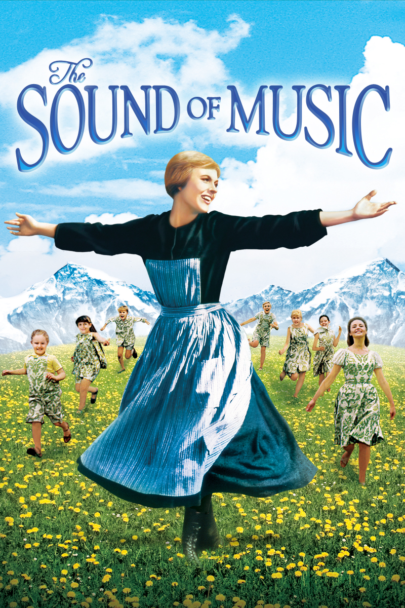

音乐之声（The Sound of Music，1965）
一句话短评：
内容简介：
- 玛利亚（朱丽·安德鲁斯 饰）是一个年轻活泼的修女，喜欢在大自然下高声歌唱，所以她常常忘记了修道院里的规矩。院长认为玛利亚并不属于规矩严格的修道院。院长与众嬷嬷商量后，决定安排玛利亚到一位名叫特拉普（克里斯托弗·普卢默 饰）上校家当家庭教师。
- 上校的妻子去世多年，留下7个孩子，他要求对孩子严格管教。他告诉玛利亚在他家的家庭教师都做不长久，都是因为孩子的恶作剧。玛利亚果然也遭到了恶作剧，可是这位善良的老师并没有告诉他们的父亲，而是像个母亲一样照顾孩子，很快跟孩子打成一片。上校也渐渐在玛利亚的引导下改变了对孩子们的态度。上校与玛利亚之间发生了感情，他们完婚后回到了已被纳粹占领的奥地利，上校并不想为纳粹办事，一家人准备逃跑……
短评：
- 1.很棒的电影，唱段经久不息，流传至今。 ——薇羅尼卡
- 2.真希望世界像它描述的那么美好 ——张天师
可播放资源：
- 哔哩哔哩 免费观看
- https://www.bilibili.com/bangumi/play/ss28658?bsource=douban
- 央视频 免费观看
- https://w.yangshipin.cn/video?type=0&vid=y0000293k7e&channel=douban_laxin&channel_origin=m_h5